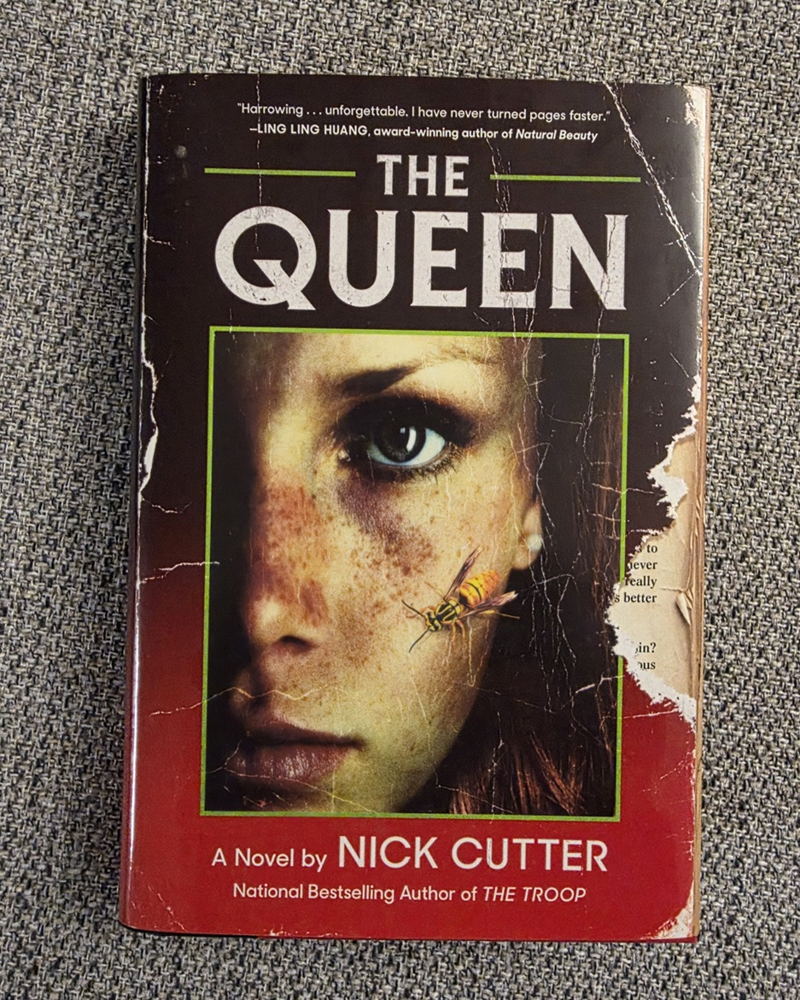
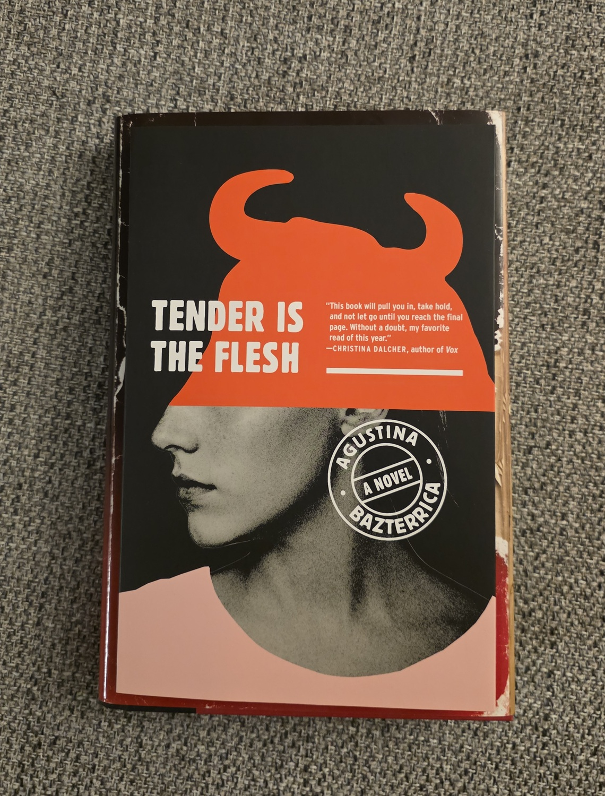
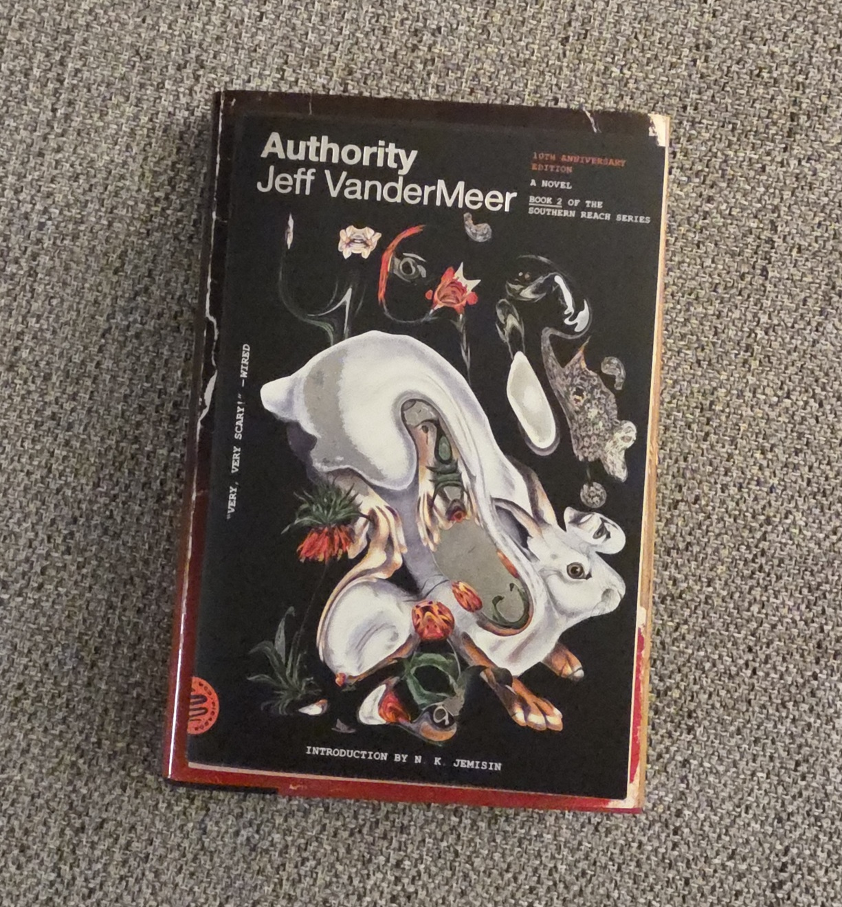

My Top 3 Reads of 2025
I started 2025 hoping to get a lot of reading done, and... well, that didn't happen. I did get some reading done, though, and I want to share my top three reads of the year.
#3 - The Queen by Nick Cutter
You've probably heard of Nick Cutter in some fashion. His most popular book, The Troop, has been slated for a movie adaptation for years now. I've enjoyed all the Cutter books that I've read so far, and was not let down when I picked up his most recent release: The Queen. Like his other stories, Cutter doesn't shy away from grotesque body horror, uncomfortable topics, and bizarre explorations of mortality. If you enjoy any of Cutter's previous work (or if you're looking to dip into some bizarre, insect-riddled horror) then give this one a read.
#2 - Tender is the Flesh by Agustina Bazterrica
Tender is the Flesh has made the rounds on BookTok for quite some time. It's often considered extreme horror, which is right up my alley. It also explores uncomfortable topics around meat consumption, government mandates, and the ease at which people are willing to look away in order to ensure their own survival. Personally, I didn't find this one to be as extreme as many believe it to be, but I'll chock that up to being desensitized by years of horror media consumption. Nonetheless, this is a phenomenal book that's sure to keep you thinking for weeks after you've put it down.
#1 - Authority by Jeff VanderMeer
I started the Southern Reach series this year, and have been unable to put it down. I tore through all four books this year, and am holding out for a fifth one. I went back and forth in trying to pick out a favorite between the four, but I have to settle on Authority. VanderMeer has crafted an incredible sci-fi world with eerie moments riddled throughout to unsettle you while you explore the anomalies of Area X.